| [ Team LiB ] |
|
5.3 Response to Setpoint ChangesA simplified [assuming gm(s) = gv(s) = 1] feedback block diagram is shown in Figure 5-10. This simplification is equivalent to lumping the measurement and valve dynamics into the process transfer function. By convention, we denote the output of the controller block as u(s), which is also the manipulated input. Notice that we are focusing on setpoint changes only, so we have not included the disturbance block. In Section 5.7 we will focus on disturbances. Figure 5-10. Simplified control block diagram. Disturbances are neglected and valve and measurement dynamics are lumped into the process transfer function.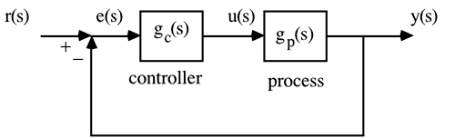 One objective of block diagram analysis is to find the output response to a setpoint change. A critical aspect is to determine the closed-loop stability. The key is to use block diagram manipulation to find the relationship between the setpoint and the output. In Figure 5-11, we have absorbed the closed-loop diagram of Figure 5-10 into a single transfer function block, to provide the closed-loop relationship between setpoint and process output. Figure 5-11. External view of Figure 5-10.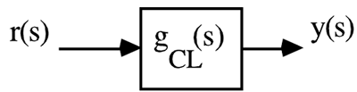 Our goal is to obtain the output y(s) as a function of the setpoint, r(s). Here, we combine the process input-output relationship, y(s) = gp(s) u(s), with controller relationship, u(s) = gc(s) e(s), to find 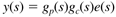 Also, since the error is defined as e(s)= r(s) - y(s), we can write 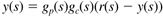 which can be solved to find 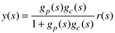 We refer to the relationship between r(s) and y(s) as the closed-loop transfer function, gCL(s), 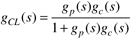 If all of the poles of gCL(s) are stable, then the closed-loop system is stable. The denominator of gCL(s) is also known as the characteristic equation. Equation (5.6) has been derived for the simple diagram shown in Figure 5-10. Please realize that more-complex block diagrams will have more-complex closed-loop transfer functions. You should be able to derive the closed-loop transfer function for any block diagram. For example the closed-loop transfer function for Figure 5-9 (neglecting disturbances) is 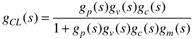 Possible Problems with Offset Using Proportional ControllersA problem with proportional controllers is that there is generally offset when a setpoint change is made. By offset, we mean that the actual process output will not be able to achieve the desired setpoint change. For simplicity, consider a first-order process, gp(s) = kp/(tps + 1), with a proportional controller, gc(s) = kc, which leads to the following closed-loop transfer function 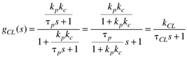 We recognize that this is a first-order transfer function, where kCL = kpkc/(1 + kpkc)and tCL = tp/(1 kpkc). For closed-loop stability, the requirement is that tCL > 0 or tp/(1 + kpkc) > 0. Since tp > 0 (the process is open-loop stable), we have the requirement that 1 + kpkc > 0 or 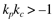 for stability. Now consider a step setpoint change of magnitude R. You should be able show that the output response will be 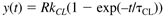 Notice that if kCL is not exactly equal to 1, there will be "offset" in the closed-loop response, as shown in Figure 5-12. That is, the process output will not exactly match the desired setpoint, even in the limit as time goes to infinity. Also, as a practical matter, it is important that kpkc > 0. Notice that if –1 < kpkc < 0, then kCL is negative; although the closed-loop is stable, the process output actually moves in the opposite direction as the setpoint change. Figure 5-12. Illustration of offset in system with a proportional controller.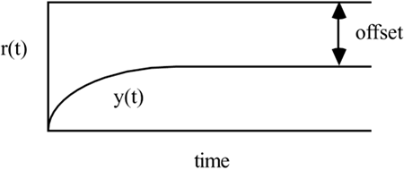 Offset can also be shown by the final value theorem of Laplace transforms. 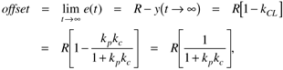 or the fractional offset is 1/(1 + kpkc). For a given kp, the offset will be reduced as kc gets larger and larger. Also, an increase in kc decreases tCL, speeding up the closed-loop response. Example 5.1: Offset with Proportional (P) Control of a First-Order ProcessConsider the process transfer function for a stirred-tank heater, where the output is temperature (°C), the manipulated input is heater power (kW), and the timescale is minutes. 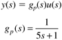 Assume a unit step temperature setpoint change [r(s) = 1/s]. The stability condition was kpkc > –1, so the closed-loop should be stable as long as kc > –1. Closed-loop responses for various values of kc (-0.5, 1, 5, and 10 kW/°C) are shown in Figure 5-13. As expected, increasing kc speeds up the response and reduces the offset. Also, it is obvious that the controller gain should be greater than zero (that is, it should be the same sign as the process gain), otherwise the response is in the opposite direction; although this may be stable, it is certainly not desirable. Figure 5-13. Closed-loop response of a first-order system under proportional-only control. Effect of proportional gain on offset, speed of response, and manipulated input action.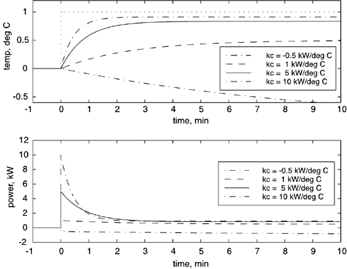 Thus far we have not considered the effect of control action. It is easy to derive the following relationship between r(s) and u(s) from Figure 5-10: 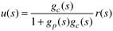 For this example, 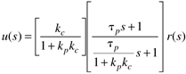 which we recognize is a lead-lag response. The control (manipulated) variable response for this example is also shown in Figure 5-13 for various values of kc. As kc increases, the magnitude and speed of the manipulated variable response increases. For a particular physical system, too high of a value of kc may cause the manipulated variable to hit a constraint. Consider a step setpoint change of magnitude R [that is r(s) = R/s]. From the definition of a proportional controller, or from the initial value theorem, we can show that 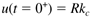 If Rmax represents a maximum setpoint change and umax represents a maximum allowable manipulated variable change, then clearly kc must be less umax/Rmax to avoid manipulated variable saturation. Notice that increasing the controller gain reduces the offset and speeds up the response. In the limit of an infinite controller gain, there is no offset and the dynamic closed-loop response is instantaneous; a clear limitation is that the manipulated input may hit a constraint (in this example, the heater power will be limited to some maximum value). In practice, there are time delays or other model uncertainties and that may cause the closed-loop to be unstable with high controller gains. It is necessary, then, to devise other control strategies to remove offset. These strategies are detailed in Section 5.4. Please note that there is one type of process where proportional control does not yield offset when a setpoint change is made. These are integrating processes, where one pole of the process has a value of zero; for example, 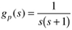 The reader should use the final value theorem of Laplace transforms to show that this process will not have offset when a step setpoint change is made, under proportional control. |
| [ Team LiB ] |
|